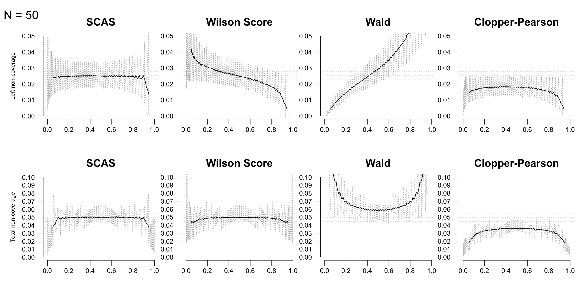

Introduction to rateci() and related functions for
estimation of a single binomial or Poisson rate
For estimation of a confidence interval for a single binomial
proportion (x/n), the Skewness-Corrected Asymptotic Score
(SCAS) method is recommended, as one that succeeds, on average, at
containing the true proportion p with the appropriate nominal
probability (e.g. 95%), and has evenly distributed tail
probabilities(Laud
2017, Appendix S3.5). It is a modified version of the Wilson
Score method. The plot below illustrates the interval non-coverage
(i.e. 1 minus the actual probability that the interval contains the true
value of p) achieved by SCAS compared to some other popular methods,
using moving average smoothing:
For example, the
SCAS 95% interval for the proportion 1/29 is obtained with
scaspci(), using closed-form calculation(Laud 2017, Appendix
A.4):
scaspci(x = 1, n = 29)
#> Lower MLE Upper
#> [1,] 0.00199 0.0398 0.155rateci() also provides two other methods with similar
coverage properties (Jeffreys and mid-p) (Laud 2018):
rateci(x = 1, n = 29)
#> $scas
#> Lower MLE Upper
#> [1,] 0.00199 0.0398 0.155
#>
#> $jeff
#> Lower est Upper
#> [1,] 0.00375 0.0403 0.15
#>
#> $midp
#> Lower MLE Upper
#> [1,] 0.00172 0.0391 0.159The Jeffreys interval can also incorporate prior information about p for an approximate Bayesian confidence interval. For example, a pilot study estimate of 1/10 would suggest a Beta(1,9) prior for p:
jeffreysci(x = 1, n = 29, ai = 1, bi = 9)
#> Lower est Upper
#> [1,] 0.00644 0.0438 0.138If more conservative coverage is required, a “continuity adjustment”
may be deployed with cc, as follows, giving
continuity-adjusted SCAS or Jeffreys, and (if cc is TRUE or
0.5), the Clopper-Pearson method. Note intermediate adjustments smaller
than 0.5 give a more refined adjustment(Laud 2017, Appendix S2).
rateci(x = 1, n = 29, cc = TRUE)
#> $scas_cc
#> Lower MLE Upper
#> [1,] 6.19e-06 0.0398 0.182
#>
#> $jeff_cc
#> Lower est Upper
#> [1,] 0.000873 0.0403 0.178
#>
#> $cp
#> Lower MLE Upper
#> [1,] 0.000873 0.0391 0.178Stratified and clustered datasets
For stratified datasets, use scoreci() with
contrast = "p" and stratified = TRUE (again,
the skewness correction is recommended, but may be omitted). By default,
a “fixed effects” analysis is produced, i.e. one which assumes a common
true parameter p across strata. The default stratum weighting uses the
inverse variance of the score underlying the SCAS/Wilson method,
evaluated at the MLE for the pooled proportion (thus avoiding infinite
weights for boundary cases). Alternative weights are sample size
(weighting = "MH") or custom user-specified weights
supplied via the wt argument. For example, population
weighting would be applied via a vector (e.g. wt = Ni)
containing the true population size (or true population proportion
Ni/N) represented by each stratum. (Note this is not
divided by the sample size/proportion per stratum, because the weighting
is applied at the group level, not the case level.)
Below is an illustration using data from the placebo arm of 13 trials of non-ulcer dyspepsia:
data(cisapride, package = "ratesci")
strat_p <- scoreci(x1 = cisapride$event.plac, n1 = cisapride$n.plac, contrast = "p", stratified = TRUE)
strat_p$estimates
#> Lower MLE Upper level p1hat p1mle
#> [1,] 0.362 0.408 0.455 0.95 0.407 0.408The function also outputs p-values for a 2-sided hypothesis test against a default null hypothesis p = 0.5, and one-sided tests against a user-specified value of theta0:
strat_p$pval
#> chisq pval2sided theta0 scorenull pval_left pval_right
#> [1,] 14.6 0.000132 0.5 -3.82 6.59e-05 1The Qtest output object provides a heterogeneity test
and related quantities:
strat_p$Qtest
#> Q Q_df pval_het I2 tau2 Qc
#> 4.54e+01 1.20e+01 8.89e-06 7.36e+01 2.08e-02 7.81e+00
#> pval_qualhet
#> 2.69e-01Per-stratum estimates are produced, including stratum weights and contributions to the Q-statistic:
strat_p$stratdata
#> x1j n1j p1hatj wt_fixed wtpct_fixed wtpct_rand theta_j lower_j upper_j
#> [1,] 9 16 0.5625 66.3 3.75 3.75 0.5612 0.32290 0.782
#> [2,] 1 16 0.0625 66.3 3.75 3.75 0.0714 0.00363 0.265
#> [3,] 18 34 0.5294 140.8 7.96 7.96 0.5291 0.36390 0.690
#> [4,] 31 56 0.5536 231.9 13.11 13.11 0.5533 0.42288 0.679
#> [5,] 6 22 0.2727 91.1 5.15 5.15 0.2761 0.12040 0.481
#> [6,] 17 55 0.3091 227.8 12.88 12.88 0.3102 0.19849 0.439
#> [7,] 7 15 0.4667 62.1 3.51 3.51 0.4674 0.23529 0.710
#> [8,] 23 58 0.3966 240.2 13.58 13.58 0.3971 0.27766 0.525
#> [9,] 3 15 0.2000 62.1 3.51 3.51 0.2065 0.05580 0.448
#> [10,] 6 27 0.2222 111.8 6.32 6.32 0.2256 0.09663 0.404
#> [11,] 12 45 0.2667 186.4 10.54 10.54 0.2684 0.15394 0.408
#> [12,] 22 30 0.7333 124.2 7.03 7.03 0.7308 0.55741 0.867
#> [13,] 19 38 0.5000 157.4 8.90 8.90 0.5000 0.34499 0.655
#> V_j Stheta_j Q_j
#> [1,] 0.01509 0.1549 1.5906
#> [2,] 0.01509 -0.3451 7.8902
#> [3,] 0.00710 0.1218 2.0905
#> [4,] 0.00431 0.1460 4.9441
#> [5,] 0.01098 -0.1348 1.6566
#> [6,] 0.00439 -0.0985 2.2089
#> [7,] 0.01610 0.0591 0.2170
#> [8,] 0.00416 -0.0110 0.0291
#> [9,] 0.01610 -0.2076 2.6765
#> [10,] 0.00894 -0.1853 3.8413
#> [11,] 0.00537 -0.1409 3.6999
#> [12,] 0.00805 0.3258 13.1855
#> [13,] 0.00635 0.0924 1.3446For a “random effects” analysis, use random = TRUE.
(This may not give a meaningful estimate of stratum variation if the
number of strata is small.)
strat_p_rand <- scoreci(x1 = cisapride$event.plac, n1 = cisapride$n.plac, contrast = "p", stratified = TRUE, random = TRUE)
strat_p_rand$estimates
#> Lower MLE Upper level p1hat p1mle
#> [1,] 0.286 0.397 0.507 0.95 0.397 0.397
strat_p_rand$pval
#> chisq pval2sided theta0 scorenull pval_left pval_right
#> [1,] 4.16 0.0641 0.5 -2.04 0.032 0.968For clustered data, use clusterpci(), which applies the
Wilson-based method proposed by (Saha, Miller, and Wang 2015), and a
skewness-corrected version:
# Data from Liang 1992
x <- c(rep(c(0, 1), c(36, 12)),
rep(c(0, 1, 2), c(15, 7, 1)),
rep(c(0, 1, 2, 3), c(5, 7, 3, 2)),
rep(c(0, 1, 2), c(3, 3, 1)),
c(0, 2, 3, 4, 6))
n <- c(rep(1, 48),
rep(2, 23),
rep(3, 17),
rep(4, 7),
rep(6, 5))
# Wilson-based interval as per Saha et al.
clusterpci(x, n, skew = FALSE)
#> Lower MLE Upper totx totn xihat ICC
#> [1,] 0.2285 0.2956 0.3728 60 203 1.349 0.1855
# Skewness-corrected version
clusterpci(x, n, skew = TRUE)
#> Lower MLE Upper totx totn xihat ICC
#> [1,] 0.2276 0.2958 0.3724 60 203 1.349 0.1855All of the above (except clusterpci()) can also handle
Poisson exposure-adjusted rates, using distrib = "poi",
where n represents the exposure time.
Technical details
The SCAS method is an extension of the Wilson Score method, using the same score function . The variance of is , and the 3rd central moment is . The confidence interval is found as the two solutions of the following equation, where is the percentile of the standard normal distribution:
For unstratified datasets, this has a closed-form solution. The formula is extended in (Laud2017?) to incorporate stratification using inverse variance weights, , or other weighting schemes as required, with the solution being found by iteration over .
The Jeffreys interval is obtained as and quantiles of the distribution, with boundary modifications when or .
A Clopper-Pearson interval may also be obtained as quantiles of a beta distribution, using for the lower confidence limit, and for the upper limit.